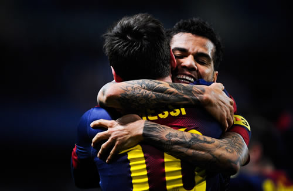

Real Chubut - Agencia de Noticias


La emotiva carta viral de Dani Alves

EL SECRETO – DANI ALVES
Voy a empezar con un secreto. Bueno, quizá aprendan algunos secretos en esta historia, porque siento que soy incomprendido por mucho gente. Pero empecemos por el primero.
Tres meses atrás, cuando el FC Barcelona hizo su increíble remontada ante Paris Saint Germain en la UEFA Champions League, vi cada momento desde mi sillón. Quizá pensaste, por leer diarios, que quería que mi ex club perdiera.
Pero, ¿qué hice cuando mi hermano Neymar marcó ese hermoso tiro libre? Salté de mi sillón y estaba gritándole a la TV.
“Vamoooooooos!”
¿Y cuando Sergi Roberto hizo el milagro en el minuto 95?
Como cualquier otro aficionado del FC Barcelona en el mundo me volví loco. Porque la verdad es que FC Barcelona todavía está en mi sangre.
¿Fui irrespetado por la junta directiva antes de dejar el club el verano pasado? Absolutamente. Así es como me siento, y no pueden decir algo diferente. Pero tú no puedes jugar por un club por 8 años, conseguir lo que conseguimos y no tener al club en tu corazón por siempre. Entrenadores, jugadores y directivos van y vienen. Pero el Barça nunca se irá.
Antes de ir a la Juventus, le hice una promesa final a la directiva. Y dije: “me van a extrañar”.
No lo dije como jugador. Barça tiene muchos jugadores increíbles. Lo que quise decir fue que iban a extrañar mi espíritu. Ellos iban a extrañar el cuidado/atención que ponía en el vestuario. Iban a extrañar la sangre que derramé cada vez que me puse la camiseta.
Cuando tuve que jugar ante el Barça en la siguiente ronda fue un sentimiento muy extraño. Especialmente en el segundo partido en el Camp Nou, sentí como si estuviera de nuevo en mi casa. Antes de que el partido comenzara, fui a la banca del Barça y saludé a mis viejos amigos, y ellos me dijeron: ‘Dani, sientate con nosotros! Te guardamos tu lugar!’.
Estaba saludando a todos dándole la espalda al árbitro. De repente, escuché el silbatazo. Me di la vuelta y el árbitro había iniciado el partido. Corrí de regreso al campo y pude escuchar a mi ex entrenador, Luis Enrique, muriéndose de la risa.
Es gracioso, ¿no? Pero el partido no fue una broma, especialmente para mí. La gente me ve y dice: ‘Dani siempre está bromeando. Siempre está sonriendo. No es serio’.
Escuchen, les diré otro secreto: antes de enfrentar a los mejores atacantes del mundo —Messi, Neymar, Cristiano— estudio sus fortalezas y debilidades como una obsesión, y planeó cómo voy a atacar. Mi objetivo es demostrarle al mundo que Dani Alves está al mismo nivel. Quizá ellos me pasarán una o dos veces. Seguro, OK. Pero yo también los atacaré. No quiero ser invisible. Quiero el escenario. Incluso a los 34 años, después de 34 títulos, todavía siento que tengo que probarme cada vez.
Pero es aún más profundo que eso.
Antes de cada partido, tengo la misma rutina. Me paro frente al espejo por 5 minutos y bloqueo todo. Después, una película comienza en mi mente. Es la película de mi vida.
En la primera escena, tengo 10 años. Estoy durmiendo en una cama de concreto en la pequeña casa de mi familia en Juaziero, Brasil. El colchón sobre la cama es tan grueso como tu dedo pequeño. La casa huele a humedad, y está oscuro afuera. Son las 5 de la mañana, y el sol todavía no sale, pero tengo que ayudar a mi padre en nuestra granja antes de ir a la escuela.
Mi hermano y yo salíamos al campo, y nuestro padre ya estaba trabajando. Tenía un pesado tanque en su espalda, y estaba rociando las frutas y plantas con químicos para matar las bacterias.
Quizá éramos muy jóvenes para lidiar con toxinas, pero le ayudábamos de cualquier manera. Esta era nuestra manera de sobrevivir. Por horas, competía con mi hermano para ver quién era el mejor trabajador. Porque, el que mi papá decía que le ayudaba más, tenía el derecho de usar nuestra única bicicleta.
Si no ganaba la bicicleta, tenía que caminar 12 millas de la granja a la escuela. El camino de regreso de la escuela era aún peor, porque los partidos de fútbol en el vecendario empezarían sin mí. Así que corría las 12 millas para llegar al terreno de juego.
Pero, ¿si ganaba la bicicleta? Podía llevar a las chicas. Podía elegir a una en el camino y ofrecerle un aventón a la escuela. Por 12 millas, era el hombre.
Así que me mataba trabajando.
Veía a mi padre cuando me iba a la escuela, y todavía tenía el gran tanque en su espalda. Tenía todo el día en el campo por delante y después, en la noche, iba a un pequeño bar que atendía para hacer dinero extra. Era un pedazo de futbolista cuando era chico, pero nunca tuvo el dinero par ir a una gran ciudad para que los scouts pudieran verlo. Él quería asegurarse de que yo tuviera esa oportunidad, aunque eso lo matara.
La pantalla oscurece.
Ahora es domingo, y estamos viendo partidos de fútbol en nuestra TV blanco y negro. Había aluminio envuelto en la antena para que pudiéramos obtener la señal de la ciudad. Para nosotros, era el mejor día de la semana. Había mucha felicidad en nuestra casa.
La pantalla oscurece.
Ahora mi padre me está llevando a la ciudad en su viejo automóvil para que pueda ir a una prueba en frente de algunos scouts. El carro es estándar (palanca), y sólo tiene dos cambios — lento y lentísimo. Puedo oler el humo.
Mi padre es un luchador. Yo debo ser un luchador, también.
La pantalla oscurece.
Ahora tengo 13 años, estoy en la academia de jugadores jóvenes en una ciudad más grande, lejos de mi familia. Hay 100 chicos metidos en un dormitorio pequeño. Es como una presión. El día antes de irme de casa, mi padre fue a la ciudad y me compró un nuevo uniforme. Sólo tenía una equipación para empezar.
Después del primer día de entrenamiento, dejé mi nuevo uniforme en el tendedor. La mañana siguiente, no estaba. Alguien lo había tomado. Ahí fue cuando me di cuenta de que no estaba más en mi granja. Este es el mundo real, y la razón por la que llaman mundo real es porque la mierda es real ahí.
Vuelvo a mi cuarto, y estoy hambriento. Entrenamos todo el día, y no había suficiente comida en el campamento. Alguien robó mi ropa. Extraño a mi familia y, definitivamente, no soy el mejor jugador. De 100, soy el 51 en habilidad. Así que me hice una promesa.
Me dije a mí mismo: ‘no vas a volver a la granja hasta que hagas que tu papá esté orgulloso de ti. Quizá seas el 51 en habilidad. Pero vas a hacer el número 1 o 2 en fuerza de voluntad. Vas a ser un guerrero. No vas a volver a casa, sin importar qué pase’.
La pantalla oscurece.
Ahora tengo 18 años de edad, y estoy diciendo una de las únicas mentiras que he dicho en el fútbol.
Estoy jugando para el Bahia en la Liga brasileña, cuando un gran scout se acerca a mí y me dice: ‘Sevilla está interesado en firmarte’.
Dije: ‘Sevilla! Asombroso!’.
El scout me dijo: ‘¿Sabes dónde está Sevilla?’.
Respondí: ‘Por supuesto que sé donde está Sevilla. Seviiiillaaaaaa. Me encanta’.
Pero yo no tenía ni puta idea de donde estaba Sevilla. Podía estar en la luna. Pero la manera en la que él dijo el nombre lo hizo sonar importante, así que mentí.
Días después, comencé a preguntar y descubrí que Sevilla juega contra el FC Barcelona y el Real Madrid. En el idioma portugués, tenemos una expresión para esta clase de momentos.
Me dije: ‘Agora’.
Es como, bang. Ahora. Vamos.
La pantalla oscurece.
Ahora estoy en Sevilla, estoy tan desnutrido que los entrenadores y los otros jugadores me ven como si debiera jugar en el equipo juvenil. Estoy en los seis meses más difíciles de mi vida. No hablo el lenguaje. El entrenador no me pone a jugar y, por primera vez, estoy pensando seriamente en volver a casa.
Pero después, por alguna razón, pienso en el uniforme que mi padre me compró a los 13 años. El que me robaron. Pienso en él con el tanque en su espalda, rociando químicos. Y decido que me voy a quedar, que voy a aprender el idioma y que voy a tratar de hacer algunos amigos para que, si vuelvo a Brasil, al menos tenga una nueva experiencia que compartir.
Cuando la temporada incia, el entrenador nos dice a todos: ‘en Sevilla, nuestra defensa nunca pasa la línea del mediocampo. Nunca’.
Juego algunos partidos, pateando el balón, viendo la línea. Sólo viendo la línea, como el perro que tiene miedo de cruzar una cerca invisible en su patio. Después, en un partido, por alguna razón, me dejo ir. Tengo que ser yo.
Dije: ‘agora’.
Y sólo fui. Ataque, ataque, ataque.
Funciona como magia. Después de eso, el entrenador dijo: ‘ok, Dani. Nuevo plan. En Sevilla, tú atacas’.
Después de unas temporadas, fuimos de ser un club de descenso a levantar la Copa UEFA dos veces.
La pantalla oscurece.
Mi télefono suena. Es mi agente.
‘Dani, Barcelona está interesado en ficharte’.
No tenía que mentir esta vez. Sabía donde estaba Barcelona.
Esa es la película que se reproduce en mi cabeza cuando me paro frente al espejo antes de cada partido. Al final, antes de caminar de regreso al vestuario, siempre digo la misma cosa a mí mismo.
Mierda, vine de la nada.
Estoy aquí.
Es irreal, pero estoy aquí.
Cuando tenía 18 años de edad, crucé el océano sólo por la oportunidad de jugar contra un equipo que compite contra FC Barcelona. ¿Tener el honor de jugar para el FC Barcelona? Era increíble.
Recuerdo durante una sesión de entrenamiento, Messi estaba haciendo cosas con el balón en sus pies que desafiaban la lógica. Por supuesto, es lo que hace todos los días. Pero esa vez, algo era diferente.
Ahora, tengo que recordarte, era una sesión de entrenamiento extremadamente intensa. No estábamos bromeando. Messi estaba dribblando y finalizado como uno matador.
Y luego, mientras está pasando por delante de mí, miro hacia abajo a sus botines, y pienso: ¿es esto una broma?
Vuelve corriendo, y pienso: ‘no, es imposible’.
Vuelve corriendo, y ahora estoy seguro de lo que estoy viendo.
Sus malditos cordones (cintas) están desatados. Ambos.
Completamente desatados. Este chico está jugando contra los mejores defensores del mundo, simplemente flotando en el campo, y está como si fuera un domingo en el parque. Ese fue el momento en el que me di cuenta que nunca más iba a jugar con alguien como él en toda mi vida.
Y después, por supuesto, está Pep Guardiola.
Si volteas la palabra computadora, de atrás para adelante, aparece Steve Jobs.
Si volteas la palabra fútbol, de atrás para adelante, aparece Pep.
Es un genio. Lo diré otra vez. Un genio.
Pep te dirá exactamente lo que va a pasar en un partido antes de que pasé. Por ejemplo, en el partido ante Real Madrid en 2010, cuando ganamos 5-0. Pep nos dijo antes del partido: ‘hoy van a jugar como si fuera una pelota de fuego. Nunca se queda en su pie. Ni siquiera medio segundo. Si hacen eso, no habrá tiempo para que nos presionen. Ganaremos fácilmente”.
La sensación cuando dejábamos cualquiera de sus charlas era que estábamos 3-0 ganando. Estábamos tan preparados, tan confiados, que sentíamos que ya íbamos ganando.
Lo más gracioso de todo es que, si al entretiempo el partido no iba bien, Pep se sentaba y se frotaba la frente. ¿Saben cómo se frota la frente? Lo han visto, ¿verdad? Está masajeando su cerebro, buscando que la genialidad venga a él.
Lo haría justo enfrente de nosotros en el vestuario. Después, como magia, vendría a él.
Bang!
‘Lo tengo’.
Luego saltaba y empezaba a dar instrucciones, dibujando matemáticas y figuras en el pizarrón.
‘Haremos esto, esto y esto, y así será cómo marcaremos’.
Pep fue el primer entrenador en mi vida que me enseñó a jugar sin el balón. Y no sólo demandaba a sus jugadores cambiar su juego, nos sentaba y mostraba por qué quería que cambiáramos, con estadísticas y vídeos.
Esos equipos del Barça eran prácticamente invencibles. Jugabámos de memoria. Sabíamos que íbamos a hacer. No teníamos que pensar.
Por eso, hasta este día, Barça está en mi corazón.
Por eso, cuando vencimos a Barcelona en los Cuartos de Final, caminé hacia mi hermano Neymar y lo abracé. Él estaba llorando y una parte de mí, también.
Imagino a la gente leyendo esto y preguntando por qué comparto estos secretos.
Bueno, pues la verdad es que tengo 34 años de edad. No sé cuánto tiempo más jugaré. Quizá 2 o 3 más. Y siento que la gente no me comprende a mí, ni a mi historia completa.
Cuando vine a la Juventus en esta temporada, fue como si estuviera dejando mi casa otra vez. Lo hice cuando tenía 13 años, yendo a la academia. Lo hice otra vez a los 18, yendo a España. Y lo hice otra vez a los 33 años, yendo a Italia.
Cuando llegué a la Juventus fue como ir a una nueva escuela. Toda mi vida, me ha encantado atacar. Y ahora estaba llegando a un lugar donde valoran la defensiva sobre todas las cosas.
Una vez más, el perro en el patio. Estaba viendo la cerca invisible.
¿Debo irme?
Pero no me fui. Al principio de la temporada, quería que los jugadores de la Juventus entendieran que respetaba su filosofía y su historia. Una vez que me asegure de tener su respeto, intenté mostrarles mis fortalezas.
Un día, vi la línea del mediocampo, y dije: ‘¿debo ir?’.
… Bang. Agora.
Atacar, atacar, atacar (y, ok, defender un poco también, o Buffon me gritará).
A veces pienso que la vida es un circulo.
Vean, no me puedo alejar de estos argentinos.
En Barcelona, tenía a Messi.
En Juventus, tengo a Dybala.
Los genios me siguen a todas partes, lo juro.
En un entrenamiento, vi algo en Dybala que había visto antes en Messi. No sólo era el regalo del talento puro. Ese lo he visto muchas veces en mi vida. Era el regalo del talento puro combinado con el deseo/voluntad de conquistar el mundo.
En Barcelona, jugábamos de memoria.
En la Juventus, es diferente. Es nuestra mentalidad colectiva la que nos ha llevado a la final de la UEFA Champions League. Cuando el silbatazo suena, encontramos una manera de ganar el partido, sin importar nada. Ganar no sólo es un objetivo en la Juventus, es una obsesión. No hay excusas.
Esta sábado, tengo la oportunidad de ganar mi trofeo 35 en 34 años en la tierra. Es una oportunidad especial para mí, y no tiene nada que ver con probarle a la directiva del FC Barcelona que se equivocó al dejarme ir.
Sé que nunca admitirán eso.
No es el punto.
¿Recuerdan lo que les dije sobre mi tiempo en la academia en Brasil? ¿Cuándo me dije a mi mísmo que no volverá a la granja hasta hacer sentir orgulloso a mi padre?
Bueno, mi padre no es un hombre emocional. Nunca he sabido cuando verdaderamente lo hago sentir mi orgulloso. En casi toda mi carrera, él ha estado en casa en Brasil. Pero en 2015, él estaba en Berlín para verme ganar la UEFA Champions League. Recuerdo que después de las celebraciones en la cancha, Barça tuvo una fiesta especial para las familias de los jugadores. Teníamos que compartir el trofeo con las personas que nos ayudaron a alcanzar nuestros sueños. Recuerdo que yo le pasé el trofeo a mi padre, y los dos lo sustivimos, posando para la foto.
Y me dijo, en portugués, lo que es una frase sucia, así que no lo traduciré palabra a palabra.
Pero, básicamente, me dijo: ‘mi hijo es el hombre ahora’.
¿Y saben qué? Él estaba llorando como un bebe.
El sábado, tendré la oportunidad de jugar por otro trofeo de UEFA Champions League con un oponente familiar. Como siempre, estudiaré a Cristiano como una obsesión.
Como siempre, iré al espejo antes del partido y se repetirá la misma película en mi mente.
La pantalla será negra, y recordaré estas cosas…
Mi cama de concreto.
El olor a humedad.
Mi padre con un tanque de químicos en su espalda.
El camino de 12 millas a la escuela.
Mi nuevo uniforme.
El tendedero vacío.
“Por supuesto que sé donde está Sevilla”.
Mierda, vine de la nada.
Estoy aquí.
Es irreal, pero estoy aquí.
Publicado por: Real Chubut - Agencia de Noticias 03-06-2017 Deportes